Mar. 2026
🎉 Paper Face2Scene, developed during my Samsung Research America internship, has been accepted at CVPR 2026.
I'm a
I am a Ph.D. student in Computer Science at the University of Toronto, working under the supervision of Michael Brudno and Babak Taati. I am also a graduate researcher at the Vector Institute.
My research explores the synergy between generative models and 3D reconstruction, focusing on 3D data generation, representation, and editing.
During my internship at Samsung AI Centre Toronto, I work under the mentorship of Alex Levinshtein, Iqbal Mohomed, and Konstantinos G. Derpanis.
I hold a Bachelor of Science in Electrical Engineering from the Iran University of Science and Technology. I am always eager to discuss research ideas and collaborate on exciting projects. Feel free to reach out.
Research Intern
Graduate Research Assistant
Graduate Research Assistant
Remote Research Assistant
Co-founder
B.Sc. in Electrical Engineering
Mar. 2026
🎉 Paper Face2Scene, developed during my Samsung Research America internship, has been accepted at CVPR 2026.
Jul. 2025
May 2025
Started my research internship at Samsung Research America (SRA).
Jan. 2025
One paper, SUM, accepted as an oral presentation at WACV'25.
Feb. 2024
Jan. 2024
Started my Ph.D. in Computer Science at the University of Toronto.
Oct. 2023
Oct. 2023
Our survey paper on Vision Transformers in Medical Imaging accepted in the Medical Image Analysis Journal.
Aug. 2023
One main paper, LaplacianFormer, and three workshop papers, DermoSegDiff, WaveFormer, and DAE-Former, accepted at MICCAI'23.
Aug. 2023
Two papers, S3-Net and INR Survey in Medical Imaging, accepted at ICCV'23 CVAMD Workshop.
Apr. 2023
Two papers, MS-Former and MMCFormer, accepted for oral presentations at MIDL'23.
Oct. 2022
Paper HiFormer on medical image segmentation accepted at WACV'23.
Oct. 2022
Paper on a real-time vision-based environment perception system accepted at a NeurIPS'22 Workshop.
Aug. 2022
Our survey paper on Diffusion Models in Medical Imaging accepted in the Medical Image Analysis Journal.
Sep. 2021
Successfully defended my bachelor's thesis on designing, simulating, and building a self-driving car.
Browse the full list by year, then open individual abstracts, papers, code, and teaser visuals.
Showing all publications.

Recent advances in image restoration have enabled high-fidelity recovery of faces from degraded inputs using reference-based face restoration models (Ref-FR). However, such methods focus solely on facial regions, neglecting degradation across the full scene, including body and background, which limits practical usability. Meanwhile, full-scene restorers often ignore degradation cues entirely, leading to underdetermined predictions and visual artifacts. In this work, we propose Face2Scene, a two-stage restoration framework that leverages the face as a perceptual oracle to estimate degradation and guide the restoration of the entire image.
Implicit Neural Representations (INRs) are proving to be a powerful paradigm in unifying task modeling across diverse data domains, offering key advantages such as memory efficiency and resolution independence. Conventional deep learning models are typically modality-dependent, often requiring custom architectures and objectives for different types of signals. However, existing INR frameworks frequently rely on global latent vectors or exhibit computational inefficiencies that limit their broader applicability. We introduce LIFT, a novel, high-performance framework that addresses these challenges by capturing multiscale information through meta-learning. LIFT leverages multiple parallel localized implicit functions alongside a hierarchical latent generator to produce unified latent representations that span local, intermediate, and global features. This architecture facilitates smooth transitions across local regions, enhancing expressivity while maintaining inference efficiency. Additionally, we introduce ReLIFT, an enhanced variant of LIFT that incorporates residual connections and expressive frequency encodings. With this straightforward approach, ReLIFT effectively addresses the convergence-capacity gap found in comparable methods, providing an efficient yet powerful solution to improve capacity and speed up convergence. Empirical results show that LIFT achieves state-of-the-art (SOTA) performance in generative modeling and classification tasks, with notable reductions in computational costs. Moreover, in single-task settings, the streamlined ReLIFT architecture proves effective in signal representations and inverse problem tasks.
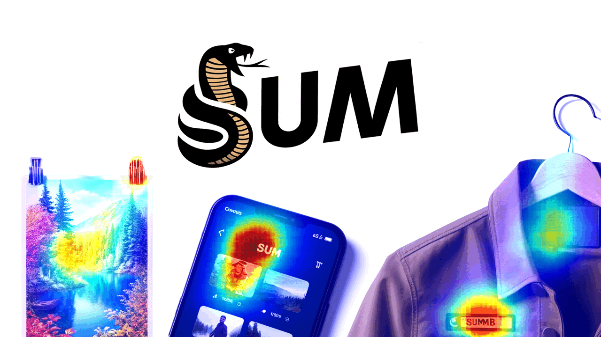
Visual attention modeling, important for interpreting and prioritizing visual stimuli, plays a significant role in applications such as marketing, multimedia, and robotics. Traditional saliency prediction models, especially those based on Convolutional Neural Networks (CNNs) or Transformers, achieve notable success by leveraging large-scale annotated datasets. However, the current state-of-the-art (SOTA) models that use Transformers are computationally expensive. Additionally, separate models are often required for each image type, lacking a unified approach. In this paper, we propose Saliency Unification through Mamba (SUM), a novel approach that integrates the efficient long-range dependency modeling of Mamba with U-Net to provide a unified model for diverse image types. Using a novel Conditional Visual State Space (C-VSS) block, SUM dynamically adapts to various image types, including natural scenes, web pages, and commercial imagery, ensuring universal applicability across different data types. Our comprehensive evaluations across five benchmarks demonstrate that SUM seamlessly adapts to different visual characteristics and consistently outperforms existing models. These results position SUM as a versatile and powerful tool for advancing visual attention modeling, offering a robust solution universally applicable across different types of visual content.
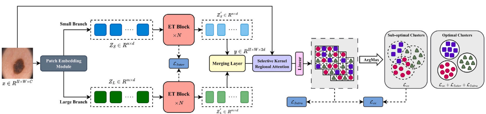
Journal: Medical Image Analysis (MedIA)
PaperAccurate medical image segmentation is crucial for enabling automated clinical decision procedures. However, existing supervised deep learning methods for medical image segmentation face significant challenges due to their reliance on extensive labeled training data. To address this limitation, our novel approach introduces a dual-branch transformer network operating on two scales, strategically encoding global contextual dependencies while preserving local information. To promote self-supervised learning, our method leverages semantic dependencies between different scales, generating a supervisory signal for inter-scale consistency. Additionally, it incorporates a spatial stability loss within each scale, fostering self-supervised content clustering. While intra-scale and inter-scale consistency losses enhance feature uniformity within clusters, we introduce a cross-entropy loss function atop the clustering score map to effectively model cluster distributions and refine decision boundaries. Furthermore, to account for pixel-level similarities between organ or lesion subpixels, we propose a selective kernel regional attention module as a plug and play component. This module adeptly captures and outlines organ or lesion regions, slightly enhancing the definition of object boundaries. Our experimental results on skin lesion, lung organ, and multiple myeloma plasma cell segmentation tasks demonstrate the superior performance of our method compared to state-of-the-art approaches.
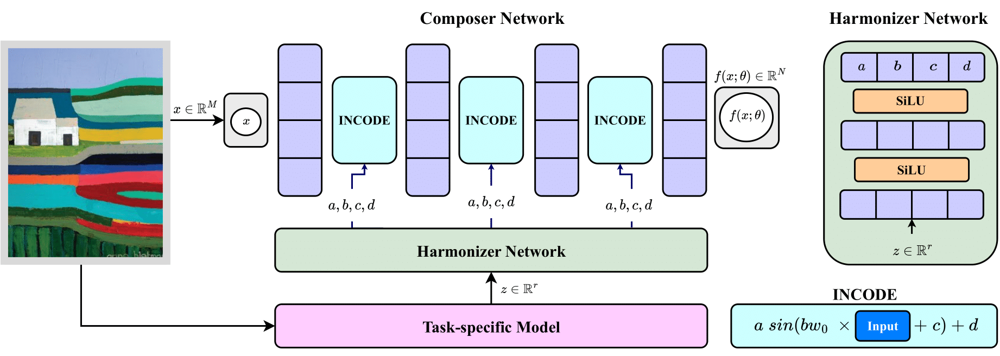
Implicit Neural Representations (INRs) have revolutionized signal representation by leveraging neural networks to provide continuous and smooth representations of complex data. However, existing INRs face limitations in capturing fine-grained details, handling noise, and adapting to diverse signal types. To address these challenges, we introduce INCODE, a novel approach that enhances the control of the sinusoidal-based activation function in INRs using deep prior knowledge. INCODE comprises a harmonizer network and a composer network, where the harmonizer network dynamically adjusts key parameters of the activation function. Through a task-specific pre-trained model, INCODE adapts the task-specific parameters to optimize the representation process. Our approach not only excels in representation, but also extends its prowess to tackle complex tasks such as audio, image, and 3D shape reconstructions, as well as intricate challenges such as neural radiance fields (NeRFs), and inverse problems, including denoising, super-resolution, inpainting, and CT reconstruction. Through comprehensive experiments, INCODE demonstrates its superiority in terms of robustness, accuracy, quality, and convergence rate, broadening the scope of signal representation.
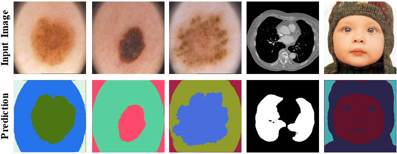
Semantic segmentation, a crucial task in computer vision, often relies on labor-intensive and costly annotated datasets for training. In response to this challenge, we introduce FuseNet, a dual-stream framework for self-supervised semantic segmentation that eliminates the need for manual annotation. FuseNet leverages the shared semantic dependencies between the original and augmented images to create a clustering space, effectively assigning pixels to semantically related clusters, and ultimately generating the segmentation map. Additionally, FuseNet incorporates a cross-modal fusion technique that extends the principles of CLIP by replacing textual data with augmented images. This approach enables the model to learn complex visual representations, enhancing robustness against variations similar to CLIP's text invariance. To further improve edge alignment and spatial consistency between neighboring pixels, we introduce an edge refinement loss. This loss function considers edge information to enhance spatial coherence, facilitating the grouping of nearby pixels with similar visual features. Extensive experiments on skin lesion and lung segmentation datasets demonstrate the effectiveness of our method.
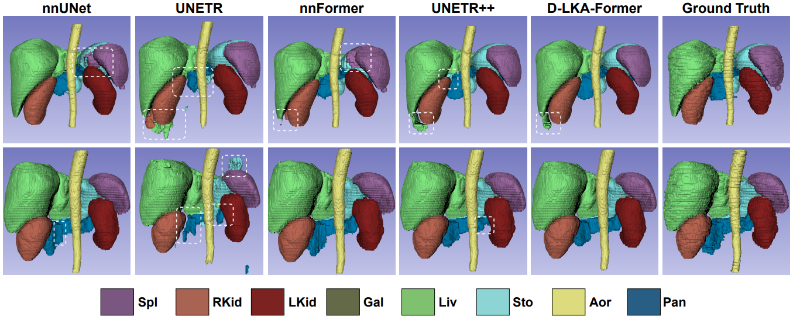
Medical image segmentation has seen significant improvements with transformer models, which excel in grasping far-reaching contexts and global contextual information. However, the increasing computational demands of these models, proportional to the squared token count, limit their depth and resolution capabilities. Most current methods process D volumetric image data slice-by-slice (called pseudo 3D), missing crucial inter-slice information and thus reducing the model's overall performance. To address these challenges, we introduce the concept of Deformable Large Kernel Attention (D-LKA Attention), a streamlined attention mechanism employing large convolution kernels to fully appreciate volumetric context. This mechanism operates within a receptive field akin to self-attention while sidestepping the computational overhead. Additionally, our proposed attention mechanism benefits from deformable convolutions to flexibly warp the sampling grid, enabling the model to adapt appropriately to diverse data patterns. We designed both 2D and 3D adaptations of the D-LKA Attention, with the latter excelling in cross-depth data understanding. Together, these components shape our novel hierarchical Vision Transformer architecture, the D-LKA Net. Evaluations of our model against leading methods on popular medical segmentation datasets (Synapse, NIH Pancreas, and Skin lesion) demonstrate its superior performance.
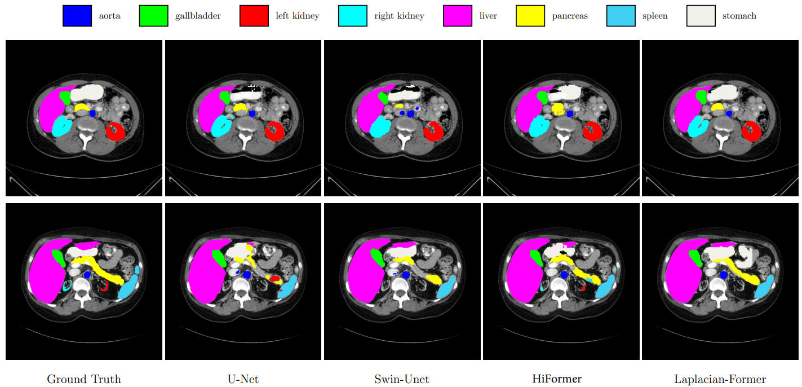
Vision Transformer (ViT) models have demonstrated a breakthrough in a wide range of computer vision tasks. However, compared to the Convolutional Neural Network (CNN) models, it has been observed that the ViT models struggle to capture high-frequency components of images, which can limit their ability to detect local textures and edge information. As abnormalities in human tissue, such as tumors and lesions, may greatly vary in structure, texture, and shape, high-frequency information such as texture is crucial for effective semantic segmentation tasks. To address this limitation in ViT models, we propose a new technique, Laplacian-Former, that enhances the self-attention map by adaptively re-calibrating the frequency information in a Laplacian pyramid. More specifically, our proposed method utilizes a dual attention mechanism via efficient attention and frequency attention while the efficient attention mechanism reduces the complexity of self-attention to linear while producing the same output, selectively intensifying the contribution of shape and texture features. Furthermore, we introduce a novel efficient enhancement multi-scale bridge that effectively transfers spatial information from the encoder to the decoder while preserving the fundamental features. We demonstrate the efficacy of Laplacian-former on multi-organ and skin lesion segmentation tasks with +1.87% and +0.76% dice scores compared to SOTA approaches, respectively.
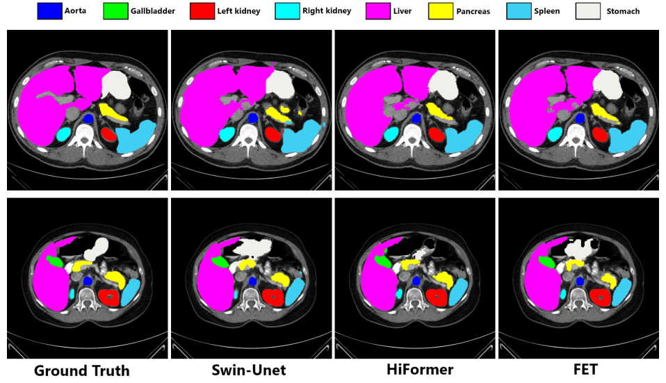
Medical image segmentation is a critical task that plays a vital role in diagnosis, treatment planning, and disease monitoring. Accurate segmentation of anatomical structures and abnormalities from medical images can aid in the early detection and treatment of various diseases. In this paper, we address the local feature deficiency of the Transformer model by carefully re-designing the self-attention map to produce accurate dense prediction in medical images. To this end, we first apply the wavelet transformation to decompose the input feature map into low-frequency (LF) and high-frequency (HF) subbands. The LF segment is associated with coarse-grained features while the HF components preserve fine-grained features such as texture and edge information. Next, we reformulate the self-attention operation using the efficient Transformer to perform both spatial and context attention on top of the frequency representation. Furthermore, to intensify the importance of the boundary information, we impose an additional attention map by creating a Gaussian pyramid on top of the HF components. Moreover, we propose a multi-scale context enhancement block within skip connections to adaptively model inter-scale dependencies to overcome the semantic gap among stages of the encoder and decoder modules. Throughout comprehensive experiments, we demonstrate the effectiveness of our strategy on multi-organ and skin lesion segmentation benchmarks.
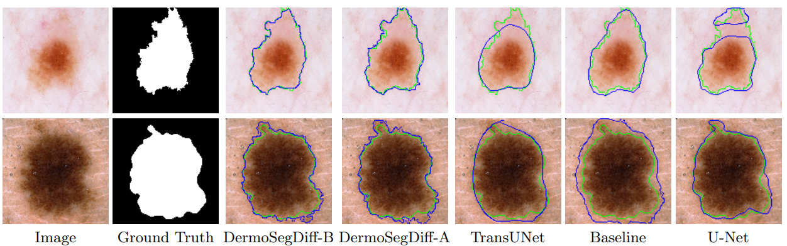
Skin lesion segmentation plays a critical role in the early detection and accurate diagnosis of dermatological conditions. Denoising Diffusion Probabilistic Models (DDPMs) have recently gained attention for their exceptional image-generation capabilities. Building on these advancements, we propose DermoSegDiff, a novel framework for skin lesion segmentation that incorporates boundary information during the learning process. Our approach introduces a novel loss function that prioritizes the boundaries during training, gradually reducing the significance of other regions. We also introduce a novel U-Net-based denoising network that proficiently integrates noise and semantic information inside the network. Experimental results on multiple skin segmentation datasets demonstrate the superiority of DermoSegDiff over existing CNN, transformer, and diffusion-based approaches, showcasing its effectiveness and generalization in various scenarios.
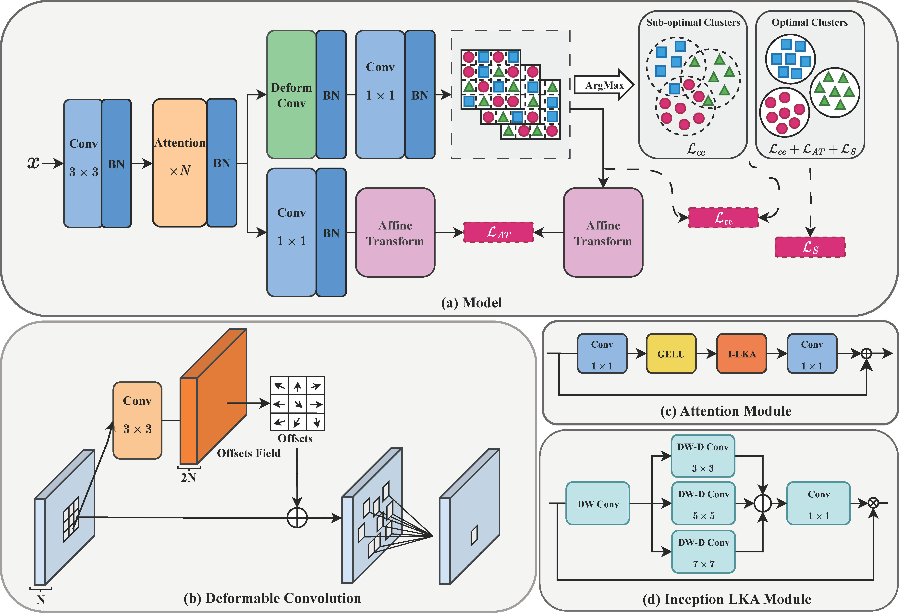
Accurate medical image segmentation is of utmost importance for enabling automated clinical decision procedures. However, prevailing supervised deep learning approaches for medical image segmentation encounter significant challenges due to their heavy dependence on extensive labeled training data. To tackle this issue, we propose a novel self-supervised algorithm, S-Net, which integrates a robust framework based on the proposed Inception Large Kernel Attention (I-LKA) modules. This architectural enhancement makes it possible to comprehensively capture contextual information while preserving local intricacies, thereby enabling precise semantic segmentation. Furthermore, considering that lesions in medical images often exhibit deformations, we leverage deformable convolution as an integral component to effectively capture and delineate lesion deformations for superior object boundary definition. Additionally, our self-supervised strategy emphasizes the acquisition of invariance to affine transformations, which is commonly encountered in medical scenarios. This emphasis on robustness with respect to geometric distortions significantly enhances the model's ability to accurately model and handle such distortions. To enforce spatial consistency and promote the grouping of spatially connected image pixels with similar feature representations, we introduce a spatial consistency loss term. This aids the network in effectively capturing the relationships among neighboring pixels and enhancing the overall segmentation quality. The S-Net approach iteratively learns pixel-level feature representations for image content clustering in an end-to-end manner. Our experimental results on skin lesion and lung organ segmentation tasks show the superior performance of our method compared to the SOTA approaches.
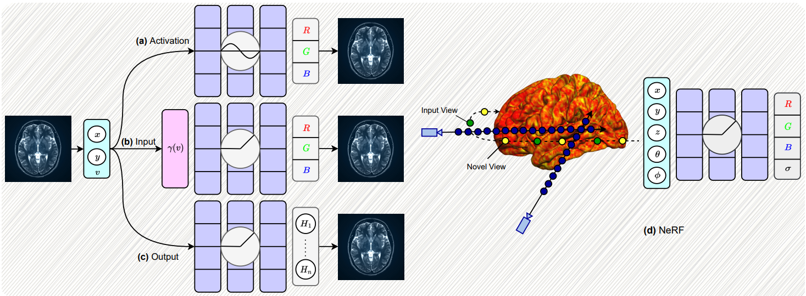
Implicit neural representations (INRs) have gained prominence as a powerful paradigm in scene reconstruction and computer graphics, demonstrating remarkable results. By utilizing neural networks to parameterize data through implicit continuous functions, INRs offer several benefits. Recognizing the potential of INRs beyond these domains, this survey aims to provide a comprehensive overview of INR models in the field of medical imaging. In medical settings, numerous challenging and ill-posed problems exist, making INRs an attractive solution. The survey explores the application of INRs in various medical imaging tasks, such as image reconstruction, segmentation, registration, novel view synthesis, and compression. It discusses the advantages and limitations of INRs, highlighting their resolution-agnostic nature, memory efficiency, ability to avoid locality biases, and differentiability, enabling adaptation to different tasks. Furthermore, the survey addresses the challenges and considerations specific to medical imaging data, such as data availability, computational complexity, and dynamic clinical scene analysis. It also identifies future research directions and opportunities, including integration with multi-modal imaging, real-time and interactive systems, and domain adaptation for clinical decision support.
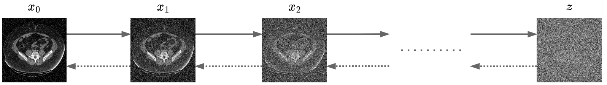
Denoising diffusion models, a class of generative models, have garnered immense interest lately in various deep-learning problems. A diffusion probabilistic model defines a forward diffusion stage where the input data is gradually perturbed over several steps by adding Gaussian noise and then learns to reverse the diffusion process to retrieve the desired noise-free data from noisy data samples. Diffusion models are widely appreciated for their strong mode coverage and quality of the generated samples despite their known computational burdens. Capitalizing on the advances in computer vision, the field of medical imaging has also observed a growing interest in diffusion models. To help the researcher navigate this profusion, this survey intends to provide a comprehensive overview of diffusion models in the discipline of medical image analysis. Specifically, we introduce the solid theoretical foundation and fundamental concepts behind diffusion models and the three generic diffusion modelling frameworks: diffusion probabilistic models, noise-conditioned score networks, and stochastic differential equations. Then, we provide a systematic taxonomy of diffusion models in the medical domain and propose a multi-perspective categorization based on their application, imaging modality, organ of interest, and algorithms. To this end, we cover extensive applications of diffusion models in the medical domain. Furthermore, we emphasize the practical use case of some selected approaches, and then we discuss the limitations of the diffusion models in the medical domain and propose several directions to fulfill the demands of this field.
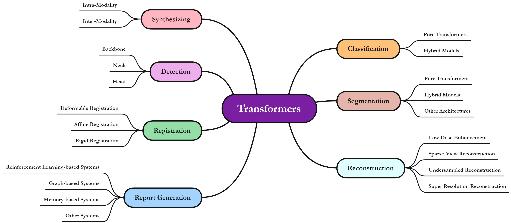
The remarkable performance of the Transformer architecture in natural language processing has recently also triggered broad interest in Computer Vision. Among other merits, Transformers are witnessed as capable of learning long-range dependencies and spatial correlations, which is a clear advantage over convolutional neural networks (CNNs), which have been the de facto standard in Computer Vision problems so far. Thus, Transformers have become an integral part of modern medical image analysis. In this review, we provide an encyclopedic review of the applications of Transformers in medical imaging. Specifically, we present a systematic and thorough review of relevant recent Transformer literature for different medical image analysis tasks, including classification, segmentation, detection, registration, synthesis, and clinical report generation. For each of these applications, we investigate the novelty, strengths and weaknesses of the different proposed strategies and develop taxonomies highlighting key properties and contributions. Further, if applicable, we outline current benchmarks on different datasets. Finally, we summarize key challenges and discuss different future research directions.
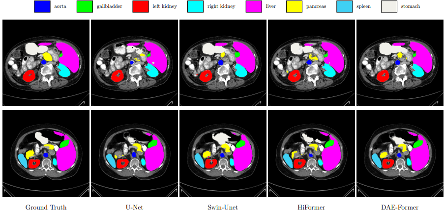
Transformers have recently gained attention in the computer vision domain due to their ability to model long-range dependencies. However, the self-attention mechanism, which is the core part of the Transformer model, usually suffers from quadratic computational complexity with respect to the number of tokens. Many architectures attempt to reduce model complexity by limiting the self-attention mechanism to local regions or by redesigning the tokenization process. In this paper, we propose DAE-Former, a novel method that seeks to provide an alternative perspective by efficiently designing the self-attention mechanism. More specifically, we reformulate the self-attention mechanism to capture both spatial and channel relations across the whole feature dimension while staying computationally efficient. Furthermore, we redesign the skip connection path by including the cross-attention module to ensure the feature reusability and enhance the localization power. Our method outperforms state-of-the-art methods on multi-organ cardiac and skin lesion segmentation datasets without requiring pre-training weights.
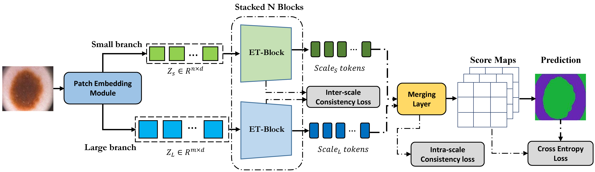
Multi-scale representations have proven to be a powerful tool since they can take into account both the fine-grained details of objects in an image as well as the broader context. Inspired by this, we propose a novel dual-branch transformer network that operates on two different scales to encode global contextual dependencies while preserving local information. To learn in a self-supervised fashion, our approach considers the semantic dependency that exists between different scales to generate a supervisory signal for inter-scale consistency and also imposes a spatial stability loss within the scale for self-supervised content clustering. While intra-scale and inter-scale consistency losses aim to increase features similarly within the cluster, we propose to include a cross-entropy loss function on top of the clustering score map to effectively model each cluster distribution and increase the decision boundary between clusters. Iteratively our algorithm learns to assign each pixel to a semantically related cluster to produce the segmentation map. Extensive experiments on skin lesion and lung segmentation datasets show the superiority of our method compared to the state-of-the-art (SOTA) approaches.
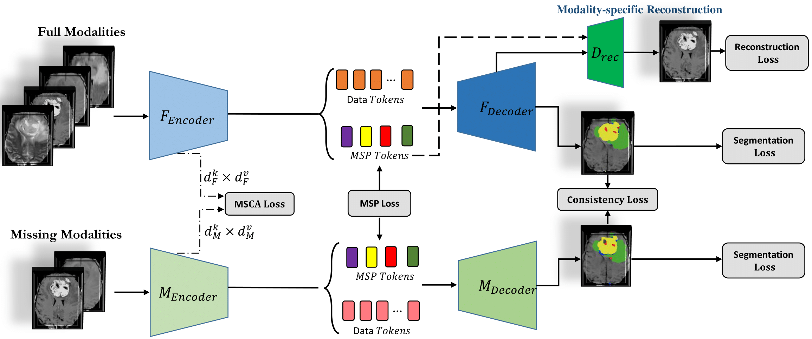
Human brain tumours and more specifically gliomas are amongst the most life-threatening cancers which usually arise from abnormal growth of the glial stem cells. In practice, Magnetic Resonance Imaging (MRI) modalities, which offer different contrasts to elucidate tissue properties, provide comprehensive information regarding the brain's structure and also potential clues for detecting tumors. Hence, multi-modal MRI is commonly utilized for the diagnosis of brain tumors. However, since the set of acquired modalities may vary between clinical sites, brain tumor studies may miss one or two MRI modalities. To address missing information in an end-to-end manner, we propose MMCFormer, a novel missing modality compensation network. Our strategy builds upon 3D efficient transformer blocks and uses a co-training strategy to effectively train a missing modality network. To ensure feature consistency in a multi-scale fashion, MMCFormer utilizes global contextual agreement modules in each scale of the encoders. Furthermore, to transfer modality-specific representations, we propose to incorporate auxiliary tokens in the bottleneck stage to model interaction between full and missing-modality paths. On top of that, we include feature consistency losses to reduce the domain gap in network prediction and increase the prediction reliability for the missing modality path. Extensive experiments on the BraTS 2018 dataset demonstrate the benefits of our approach compared to competing approaches.
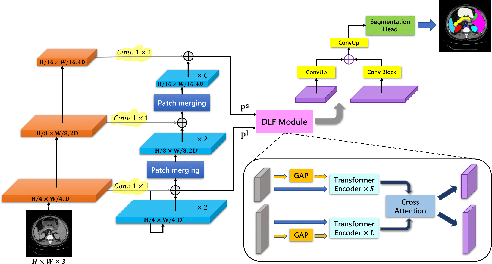
Convolutional neural networks (CNNs) have been the consensus for medical image segmentation tasks. However, they suffer from the limitation in modeling long-range dependencies and spatial correlations due to the nature of convolution operation. Although transformers were first developed to address this issue, they fail to capture low-level features. In contrast, it is demonstrated that both local and global features are crucial for dense prediction, such as segmenting in challenging contexts. In this paper, we propose HiFormer, a novel method that efficiently bridges a CNN and a transformer for medical image segmentation. Specifically, we design two multi-scale feature representations using the seminal Swin Transformer module and a CNN-based encoder. To secure a fine fusion of global and local features obtained from the two aforementioned representations, we propose a Double-Level Fusion (DLF) module in the skip connection of the encoder-decoder structure. Extensive experiments on various medical image segmentation datasets demonstrate the effectiveness of HiFormer over other CNN-based, transformer-based, and hybrid methods in terms of computational complexity, and quantitative and qualitative results.

A significant portion of driving hazards is caused by human error and disregard for local driving regulations; Consequently, an intelligent assistance system can be beneficial. This paper proposes a novel vision-based modular package to ensure drivers' safety by perceiving the environment. Each module is designed based on accuracy and inference time to deliver real-time performance. As a result, the proposed system can be implemented on a wide range of vehicles with minimum hardware requirements. Our modular package comprises four main sections: lane detection, object detection, segmentation, and monocular depth estimation. Each section is accompanied by novel techniques to improve the accuracy of others along with the entire system. Furthermore, a GUI is developed to display perceived information to the driver. In addition to using public datasets, like BDD100K, we have also collected and annotated a local dataset that we utilize to fine-tune and evaluate our system. We show that the accuracy of our system is above 80% in all the sections.
For inquiries or feedback on my research, don't hesitate to reach out. I’m always happy to hear from you and exchange ideas.
amirhossein@cs.toronto.edu
amirhossein477@gmail.com